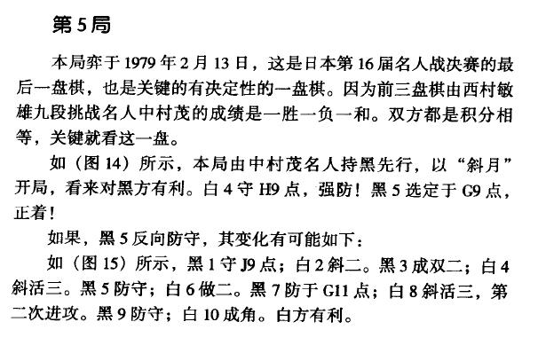
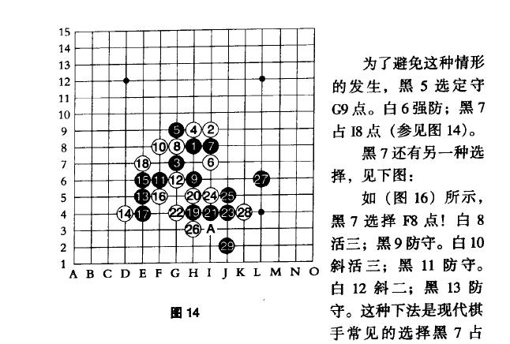
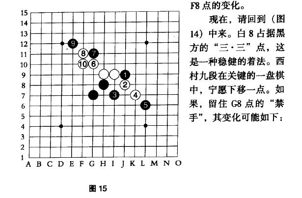
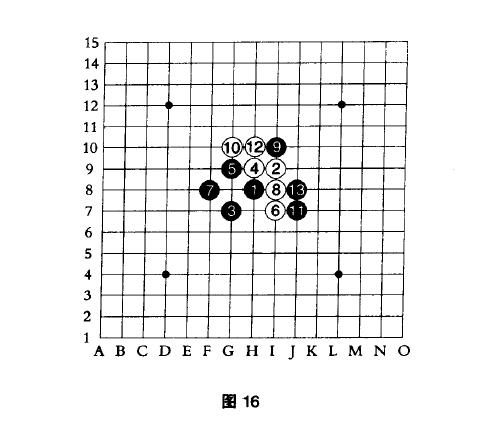
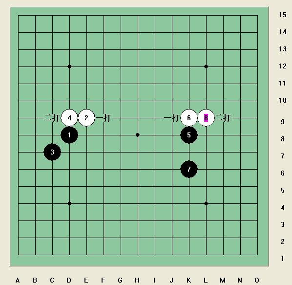
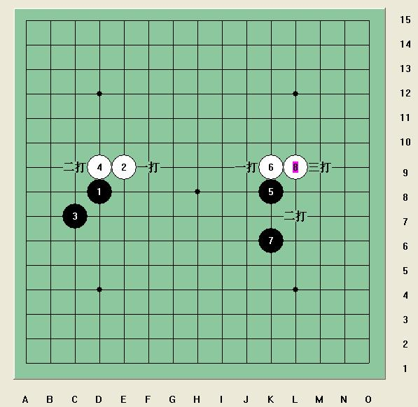
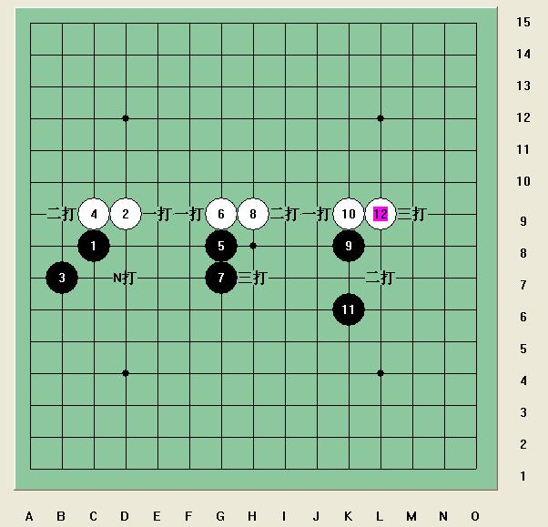

[学术讨论]了解下斜月的历史，顺便不借助现代计算机，用人脑想一下
#1 [学术讨论]了解下斜月的历史，顺便不借助现代计算机，用人脑想一下 作者：岳麓小棋后 发表时间：2009-4-6 18:03:18
本来学瑞星好好的，不堪直斜都能开斜月的骚扰，最近开始学习斜月了。现在让我们看下历史上的斜月， 。
。




现在提问：谁能不用棋谱知识解释下，斜月一打5为什么比二打5强？
［此帖子已被 茗弈小刀 在 2009-4-22 19:09:40 编辑过］
#2 Re:了解下斜月的历史，顺便不借助现代计算机，用人脑想一下 作者：岳麓小棋后 发表时间：2009-4-6 18:27:40

你不得不感慨，连珠真奇妙！！！
#3 Re:Re:了解下斜月的历史，顺便不借助现代计算机，用人脑想一下 作者：岳麓小棋后 发表时间：2009-4-6 18:30:20
#4 Re:了解下斜月的历史，顺便不借助现代计算机，用人脑想一下 作者：聂淼 发表时间：2009-4-6 19:12:43
五子棋的有些定式只能用排除法来解释#5 Re:了解下斜月的历史，顺便不借助现代计算机，用人脑想一下 作者：忧郁的双眼 发表时间：2009-4-6 19:13:49
去打打中村名人的斜月谱吧
这种难局
学习一下名人的思路
对你拆棋有帮助的
#6 Re:了解下斜月的历史，顺便不借助现代计算机，用人脑想一下 作者：金瓜 发表时间：2009-4-6 23:57:28
2打直接攻杀，1打是后中先，该用哪种手段是个难题
#7 Re:了解下斜月的历史，顺便不借助现代计算机，用人脑想一下 作者：岳麓小棋后 发表时间：2009-4-7 0:09:14
楼上的解释很不错哦，赞一个
#8 Re:了解下斜月的历史，顺便不借助现代计算机，用人脑想一下 作者：当鱼爱上飞鸟 发表时间：2009-4-7 1:31:30
我有同感
#9 Re:了解下斜月的历史，顺便不借助现代计算机，用人脑想一下 作者：莫斯卡 发表时间：2009-4-7 12:41:07
小棋后，我可以解释，但现在还不能公布#10 Re:了解下斜月的历史，顺便不借助现代计算机，用人脑想一下 作者：wd1988 发表时间：2009-4-7 22:23:49
楼上这样的人实在太多，其实我认为你这样的就应该待在家里，不要出来抛头露面#11 Re:Re:了解下斜月的历史，顺便不借助现代计算机，用人脑想一下 作者：岳麓小棋后 发表时间：2009-4-7 22:35:49

这个图也许更有助于你们理解五子棋内在的棋型周期规律变化
#12 Re:了解下斜月的历史，顺便不借助现代计算机，用人脑想一下 作者：茗弈梓轩 发表时间：2009-4-10 13:59:56
学习了，棋后辛苦了！
#13 Re:了解下斜月的历史，顺便不借助现代计算机，用人脑想一下 作者：忧郁的双眼 发表时间：2009-4-10 14:02:46
=======上图对应的爱五子棋谱代码如下，以便你拆解：========
h8i9g7h9g9i7i8g8h6f8e6f6f5g4d7e7d8f10
======================================================
又是中村茂名人 。大家来试下斜月在他的手下何等的强大。
#14 Re:了解下斜月的历史，顺便不借助现代计算机，用人脑想一下 作者：wrwak 发表时间：2009-4-11 17:23:12
银月打点 2 3打搞反了